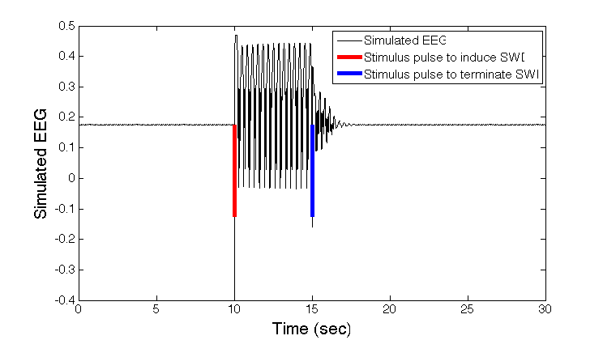

This is the readme for the matlab scripts associated with the paper: Taylor PN, Wang Y, Goodfellow M, Dauwels J, Moeller F, Stephani U, Baier G (2014) A computational study of stimulus driven epileptic seizure abatement PLoS One 9(12):e114316 These model files were supplied by Yujiang Wang. To run a simulation type in the matlab prompt: runSim The figure  should appear. The ode function is specified in AmariTCimpBS.m